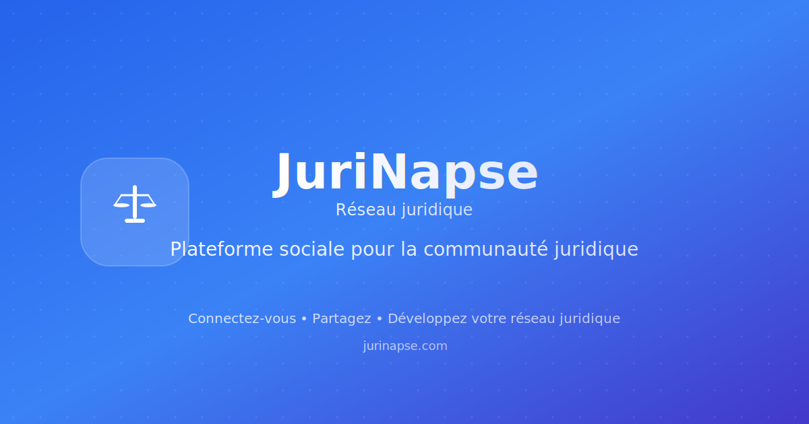

🏛️ Preview Favicons JuriNapse
Favicons Personnalisés JuriNapse
16x16 (Custom)
32x32 (Custom)
180x180 Apple (Custom)
Logo principal
Logo complet
Open Graph Image

1200x630 (Social Media)
✅ Intégration terminée:
Vos SVG personnalisés sont maintenant utilisés partout sur JuriNapse.